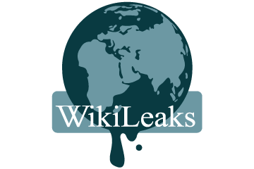
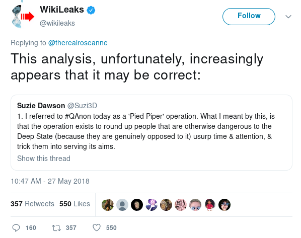
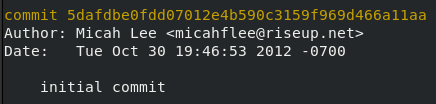
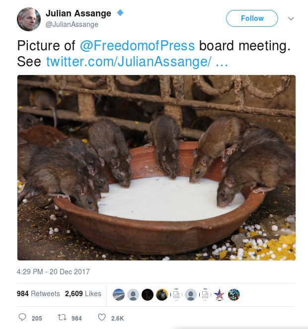
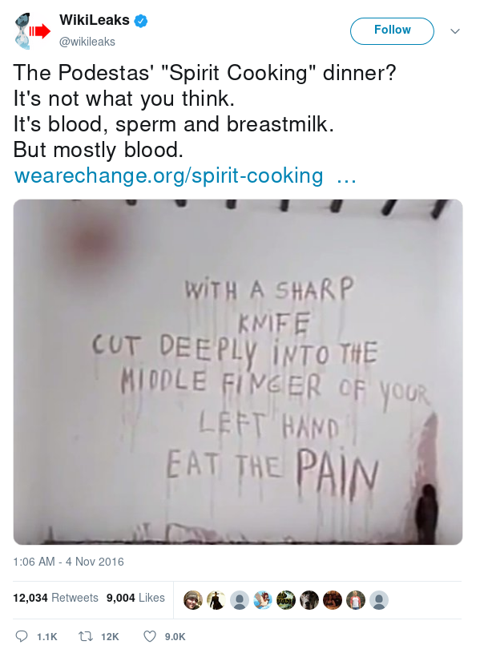

Lies That WikiLeaks Tells You
Last weekend, WikiLeaks sent an email to journalists with a list of 140 things not to say about WikiLeaks and Julian Assange because they are "false and defamatory." Reuters first broke the story, and the next day Emma Best published the complete list. Many of the things on the list can't actually be "false" because they're subjective or nuanced ("It is false and defamatory to suggest that Julian Assange is a 'hacker'"), and many aren't defamatory, even if they are false ("It is false and defamatory to suggest that Julian Assange’s profession is 'computer programmer'.").
And many of the the things on the list are true, and WikiLeaks/Assange are being misleading. Some directly relate to me -- they came from Twitter fights I've with WikiLeaks and its minions. So I thought I'd fact check WikiLeaks' "false and defamatory" censorship list. This is by no means an exhaustive fact check -- for example, I'm not not covering the list items about the two Swedish women who accused Assange of rape, though I'm pretty confident a lot of that stuff is misleading as well. Before digging into the misinformation, I first want to take a moment to discuss how pathetic this is.
First, the email starts out with, "CONFIDENTIAL LEGAL COMMUNICATION. NOT FOR PUBLICATION," but whoever sent a copy of it to Reuters and Emma Best didn't break any off-the-record agreement with WikiLeaks. That's not how that works, which WikiLeaks really ought to know. Simply stating that your email is not for publication doesn't make it off-the-record -- both parties have to agree.
Second, while it's been clear for some time that WikiLeaks isn't the pro-transparency, pro-free speech, anti-censorship organization that it pretends to be, this latest feeble attempt at ego-driven image management is just sad. It reminds me of when WikiLeaks used legal threats to try to censor the documentary film Risk (2016) because the filmmakers wouldn't remove scenes of Assange, who consented to being filmed, making sexist comments about women.
Secret DMs with Donald Trump, Jr.
In November 2017, the Atlantic revealed secret Twitter direct messages between @wikileaks and @DonaldJTrumpJr. WikiLeaks did most of the fanboying, but Trump Jr. responded some of the time, too.
Highlights of the exchange include:
- WikiLeaks asked Trump Jr. to, "Leak us one or more of your father’s tax returns," arguing that biased liberal media might publish them at any time, and that, "If we publish them it will dramatically improve the perception of our impartiality," adding, "That means that the vast amount of stuff that we are publishing on Clinton will have much higher impact, because it won’t be perceived as coming from a ‘pro-Trump’ ‘pro-Russia’ source." (Had Trump sent Assange a tax return, I have no doubt that WikiLeaks would have pretended it came from a whistleblower, rather than being an officially sanctioned leak.)
- WikiLeaks suggested that Trump scream about rigged elections if he lost against Clinton: “Hi Don if your father ‘loses’ we think it is much more interesting if he DOES NOT conceed [sic] and spends time CHALLENGING the media and other types of rigging that occurred -- as he has implied that he might do.”
After Trump won the election:
- WikiLeaks asked if president-elect Trump could award Assange with an Australian ambassadorship: "It would be real easy and helpful for your dad to suggest that Australia appoint Assange ambassador to [Washington,] DC."
Now, back to the "false and defamatory" claims.
It is false and defamatory to suggest that Julian Assange or WikiLeaks has ever colluded with or conspired with, or compromised the integrity of its journalism for, any political campaign or State [in fact, published communication records show WikiLeaks doing exactly the opposite: rejecting approaches by Cambridge Analytica and the Trump campaign for information on its pending publications, see https://defend.wikileaks.org/].
I'd argue that the secret exchange with Trump Jr. is "conspiring with" a political campaign, and that it compromised the integrity of WikiLeaks as an objective news organization. Had they been up-front about their pro-Trump bias the entire time, it would have still been unethical, but it wouldn't have been such a betrayal.
It is false and defamatory to suggest that WikiLeaks tried to have the Trump administration appoint Julian Assange as an ambassador or to have any other person or state appoint him as an ambassador.
This one is a pretty blatant lie, considering WikiLeaks tried to have the Trump administration get Australia to appoint Julian Assange as an ambassador. And it doesn't really help Assange's case that he tweeted about it:
Guccifer 2.0, the GRU-run persona that provided WikiLeaks with DNC and Podesta emails
Guccifer 2.0, the online persona that claimed to be a Romanian "lone hacker," took credit for hacking into the DNC, and began leaking DNC emails to journalists. But the Mueller investigation released a mountain of evidence that shows that this persona, along with faux-leak site DCLeaks, the hackers responsible for the spearphishing campaign that hacked Clinton campaign chairman John Podesta's Gmail account, and the hackers who hacked the DCCC and DNC networks, are all controlled by specific Russian military intelligence officers, working for the GRU.
Check the link above for more details, but here's a quick example. The spearphishing email that hacked Podesta's account included it Bitly link. The email address that registered that Bitly account, "dirbinsaabol@mail.com," was also used to sign up for an "online cryptocurrency service" (probably BitPay), and that account was used to pay for registering the domain dcleaks.com. Oh, also, the @Guccifer_2 Twitter account always logged in from a VPN service, except for once, when they apparently forgot to connect to the VPN and logged in from an IP address that geolocated to a GRU building in Moscow.
According to Mueller's indictment of GRU hackers, WikiLeaks contacted Guccifer 2.0 asking that they "[s]end any new material [stolen from the DNC] here for us to review and it will have a much higher impact than what you are doing." When Guccifer 2.0 ignored them, they asked again a few weeks later: “if you have anything hillary related we want it in the next tweo [sic] days prefable [sic] because the DNC [Democratic National Convention] is approaching and she will solidify bernie supporters behind her after," adding that "we think trump has only a 25% chance of winning against hillary … so conflict between bernie and hillary is interesting."
In response, Guccifer 2.0 sent a plaintext email to WikiLeaks, with an encrypted attachment called "wk dnc link1.txt.gpg" saying, "the encrypted file contained instructions on how to access an online archive of stolen DNC documents." Just over a week later, WikiLeaks began publishing the DNC emails.
It is false and defamatory to suggest that WikiLeaks or Julian Assange is, or has ever been, close to the Russian state, the Kremlin or Vladimir Putin.
So this one is a bit more nuanced. The source for WikiLeak's most influential leak, the DNC and Podesta emails, was a bunch of GRU officers trying to influence the 2016 election. And at various times WikiLeaks spread misinformation in order to protect their source's identity (see below). But does this mean that WikiLeaks or Julian Assange was "close to" the GRU?
Guccifer 2.0 was also a source for many other journalists (although, they all named their source as Guccifer 2.0; WikiLeaks pretended their source was a whistleblower), and it's plausible that Assange didn't realize he was communicating with GRU officers and thought it was a "lone hacker." So, I'm not really sure. But in any case, it's ridiculous for WikiLeaks to thinks this topic should be off limits to journalists considering the Russian military hacked a U.S. political party, leaked emails to WikiLeaks, and they published them at key points in order to hurt the Clinton campaign. And once it became clear to Assange who his source actually was, he chose to keep up the misinformation.
Assange breathing life into the Seth Rich conspiracy theory
Shortly after WikiLeaks began publishing DNC emails, Assange went on a Dutch TV and encouraged the conspiracy theory that Seth Rich, a former DNC staffer who was killed in Washington, DC in what police believe was a botched robbery, was his source, and that the Democrats had him murdered for leaking emails to WikiLeaks. The exchange goes like this:
Assange brings up Seth Rich out of nowhere: "There's a 27-year-old, who works for the DNC, who was shot in the back -- murdered -- just a few weeks ago, for unknown reasons as he was walking down the street in Washington."
Host: "That was just a robbery, I believe, wasn't it?"
Assange: "No. There's no finding."
Host: "What are you suggesting?"
Assange: "I'm suggesting that our sources take risks, and they become concerned to see things occurring like that--"
Host: "But was he one of your sources then?"
Assange: "We don't comment on who our sources are, but--"
Host: "Then why make the suggestion? About a young guy being shot in the streets of Washington?"
Assange: "Because we have to understand how high the stakes are in the United States, and that our sources are -- you know, our sources face serious risks. That's why they come to us, so that we can protect their anonymity."
Host: "But it's quite something to suggest a murder. That's basically what you're doing."
Assange: "Well, others have suggested that. We are investigating to understand what happened in that situation, with Seth Rich. I think it is a concerning situation. There's not a conclusion yet, we wouldn't be willing to say a conclusion, but we are concerned about it. And more important, a variety of WikiLeaks sources are concerned when that kind of thing happens."
It is false and defamatory to suggest that WikiLeaks or Julian Assange claimed that any person or entity was their source for WikiLeaks’ 2016 U.S. election publications [it is defamatory because Julian Assange’s professional reputation is substantially based on source protection].
So yup, that's a straight up lie. I guess unless you try to argue that Assange's interaction on that show wasn't a "claim".
It is false and defamatory to suggest that WikiLeaks or Julian Assange has ever published, uttered or tried to promote alleged conspiracy theories claiming “John Podesta engaged in satanic rituals”, the “Democratic Party had Seth Rich Killed”, “Clinton wore earpieces to the 2016 US election debates”, on “Clinton’s health” or “Clinton kidnapping children”.
That's another lie. Assange definitely "uttered" and "tried to promote" the Seth Rich conspiracy theory.
It is false and defamatory to suggest that WikiLeaks or Julian Assange has ever stated or suggested that any particular person was their source for any publication, including Seth Rich.
Another lie.
Also, Assange didn't just suggest that Seth Rich was his source, he also actively lied about who his source wasn't. As a guest on Sean Hannity's Fox News show (Assange is a classy guy, I know), he said: "Our source is not the Russian government, and is not a state party."
The Pizzagate conspiracy theory
After WikiLeaks published the Podesta emails and right-wing idiots started sifting through them, they decided that whenever an email mentioned going out for pizza, it was actually a secret code. They concluded that these "pizza" references could only mean that high-ranking Democrats were actually involved in a child sex ring based in the basement of the Comet Ping Pong pizza place in Washington, DC. Edgar Maddison Welch decided to "investigate" Pizzagate, and drove up to DC from North Carolina, bringing three guns with him. When he got to Comet Ping Pong (which, by the way, doesn't have a basement), he fired a gun. He was sentenced to four years in prison.
It is false and defamatory to suggest that Julian Assange or WikiLeaks promoted or invented the “pizzagate” conspiracy theory.
It would be a lot easier to believe that WikiLeaks didn't promote the Pizzagate conspiracy if they weren't hosting a wiki page in order to discuss the conspiracy theorists' findings at https://our.wikileaks.org/Pizzagate. (Shocking, right? Who realized WikiLeaks actually included a wiki!)
To be fair, the wiki pages include a disclaimer saying, "It is NOT an endorsed by WikiLeaks for quality of the material, content, or judgement" -- but I mean seriously. You don't see ProPublica hosting community forums for conspiracy theorists. Why is WikiLeaks?
Other conspiracy theories
It is false and defamatory to suggest that WikiLeaks or Julian Assange has ever published, uttered or tried to promote a “conspiracy theory”.
Seth Rich and Pizzagate are far from the only ones. WikiLeaks and Assange make off-hand conspiracy-ridden comments on a regular basis. In fact, I noticed WikiLeaks dip into the QAnon conspiracy theory in a reply to Roseanne Barr (if you'd like to lose some critical thinking skills, read the Twitter thread WikiLeaks is commenting on, and the replies to WikiLeaks; the QAnon people were pissed that WikiLeaks wasn't a true believer):

So, as one does on Twitter, I made fun of them. But I guess they are pro-censorship after all because they blocked me for it. (Just kidding, blocking people on Twitter obviously isn't censorship.)
Freedom of the Press Foundation and SecureDrop
After Emma Best published the complete list of 140 things you're not allowed to say about WikiLeaks, WikiLeaks tweeted out a link to the list themselves, which they published on Pastebin. Unsurprisingly, they edited the list first, presumably to remove claims they have a harder time defending. Here's one of the ones they removed:
It is false and defamatory to deny that Julian Assange co-founded the Freedom of the Press Foundation with John Perry Barlow.
WikiLeaks and Assange have done a good job at deleting the tweets where they first made this claim, but it's not true.
Barlow was one of the co-founders of FPF, and he did have a conversation with Assange about starting a new organization that could help bypass the financial censorship WikiLeaks was facing. But that's extend of Assange's role. Having a conversation with a founder doesn't make you a founder.
However, during a Twitter fight I was involved in, an official WikiLeaks account did make the claim that I'm not a co-founder of FPF.
When FPF was founded, I was the first (and only, at the time) staff, the chief technology officer. I built the FPF website, including the crowd-funding platform that we used to help WikiLeaks bypass financial censorship. Here's the initial commit I made on the FPF website, from October 30, 2012 (FPF officially launched on December 17, 2012):

After starting work at The Intercept, I stepped down as CTO and was voted onto the board of directors.
That Twitter fight started because I called out WikiLeaks for taking credit for Aaron Swartz's work, after he died and couldn't defend himself.
It apparently struck such a chord that WikiLeaks included this in their "false and defamatory" censorship list:
It is false and defamatory to suggest that Julian Assange is not the sole first inventor of cryptographically secure “drop boxes” to protect whistleblowers and journalistic sources.
It's true that Aaron was inspired by WikiLeaks when he began development the DeadDrop project (which was later renamed to SecureDrop) in June 2011. But SecureDrop isn't "WikiLeaks technology." The WikiLeaks leak platform is proprietary, and unlike SecureDrop (which is a free software project) has never had a public security audit. Saying SecureDrop is WikiLeaks technology is a bit like saying "the iPhone is Nokia technology."
But both leak platforms share a common critical component: anonymity of sources is enforced by making the leak site only available using a Tor onion service. Tor Project, not WikiLeaks, deserves the credit for the "cryptographically secure" part of the WikiLeaks leak platform.
It could be true that WikiLeaks was the first to have the idea of using a Tor onion service as a whistleblower drop box though. It was a good idea.
Defending Vladimir Putin
In 2015, an anonymous source leaked a massive trove of tax haven data to a German newspaper, who enlisted the help of the International Consortium of Investigative Journalists (ICIJ) to report on it all. ICIJ shared the data with dozens of partners, including the Organized Crime & Corruption Reporting Project (OCCRP). This leak was known as the Panama Papers, and in revealed scandals around the world, investigated by over 100 newsrooms, and reported in 25 languages.
One of these scandals, reported by OCCRP in collaboration with investigative journalists at the Russian newspaper Novaya Gazeta, implicated Putin's close friend Sergei Roldugin. Roldugin, a cellist, was implicated in stealing $230 million from Russian tax payers in 2007. Putin was angry about the scandal, and so was WikiLeaks, it turned out.
Keep in mind that the documents were real, and the Putin-linked corruption that was revealed actually happened. After WikiLeaks tweeted in Putin's defense, Putin himself cited WikiLeaks in order to dismiss the scandal:
“Besides,” [Putin] added, “we now know from WikiLeaks that officials and state agencies in the United States are behind all this.”
It is false and defamatory to suggest that Julian Assange called the Panama Papers “a Soros-funded attack against Putin” [see https://twitter.com/wikileaks/status/717810984673484800].
Sure, they didn't use the words "Soros-funded," though they included "Open Society Institute & Soros Foundations Network" in their tweet calling this (true, brave, risky for Russian journalists) investigative journalism an "attack story on Putin."
I wrote a Twitter thread about this topic that goes into greater detail. That's just one example of WikiLeaks protecting Putin's government. Here's another:
In 2012, WikiLeaks published a trove of over two million hacked emails from the Syrian government, called the Syria Files. But, according to court records about the hacktivists that breached Syria's computers, obtained by the Daily Dot, WikiLeaks withheld an email from the Syria Files. This email described a €2 billion transaction between the Syrian government and a state-owned Russia bank. It appears that WikiLeaks selectively suppressed this email to avoid implicating the Russian government.
It is false and defamatory to suggest that WikiLeaks or Julian Assange has ever suppressed materials critical of Israel, Russia or any other State.
I'm gonna call this one a lie.
Anti-Semitism and the far right
Julian Assange appears to have a problem with Jews. I first noticed when WikiLeaks tweeted this (they've since deleted it):
The parentheses refer to a neo-Nazi meme called "echoes," which identifies Jews online by surrounding their names with three parentheses. In response to the meme, many Jewish people and some allies began to bracket their names on Twitter in a show of solidarity.
Shortly after that tweet, in a private Twitter DM group, WikiLeaks called Jewish investigative journalist Raphael Satter a "rat," after he tweeted an article he wrote for the Associated Press about the harm caused when WikiLeaks publishes private information about individuals. (A member of this Twitter DM group leaked the incredibly revealing messages to me, and I reported on them for The Intercept. You can also see my Twitter thread about these leaked DMs here.)

WikiLeaks then instructed the followers to "Bog him down. Get him to show his bias." (Those leaked DMs show a pattern of WikiLeaks leading troll campaigns like this one.)
People used to be able to donate to WikiLeaks using the FPF website, a system we set up in order to bypass the financial censorship that WikiLeaks was facing. But at the end of 2017, after WikiLeaks failed to show us any evidence that the 2010 financial blockade against them was still ongoing, the FPF board of directors unanimously voted to take down our WikiLeaks donate button (they could still receive credit card donations through a separate non-profit in Europe). In response, WikiLeaks orchestrated a troll campaign against me personally (I describe it in this Twitter thread if you're interested).
As part of the trolling campaign, Assange called us rats, and an official WikiLeaks Twitter account, along with swarms of WikiLeaks fans, piled on, using other anti-Semitic imagery and language.

Nazis and other anti-Semites have a long history of calling people they despise, like Jews and immigrants, rats.
And here's another tidbit of evidence of anti-Semitism. In 2014, someone Assange hired to ghostwrite his memoir, who ended up turning down the job, described bigoted ramblings "in which he’d uttered, late at night, many casual libels, many sexist or anti-Semitic remarks, and where he spoke freely about every aspect of his life."
It is false and defamatory to suggest that Julian Assange is an anti-semite.
Like many of the things on the "false and defamatory" list, this one is subjective. But, from my perspective, it's pretty clear that he's an anti-Semite.
But that's not all. Assange started showing signs of anti-Semitism long before 2016 though. In 2013, former WikiLeaks employee James Ball described his falling out with Assange in an article for the Daily Beast:
The reason I quit was because of a friend of Julian’s whose activities were unstomachable and unforgivable. That man was Israel Shamir. Shamir is an anti-Semitic writer, a supporter of the dictator of Belarus, and a man with ties and friends in Russian security services. He and Julian -- unknown to us -- had been in friendly contact for years. It was a friendship that would have serious consequences.
Introduced to WikiLeaks staff and supporters under a false name, Shamir was given direct access to more than 90,000 of the U.S. Embassy cables, covering Russia, all of Eastern Europe, parts of the Middle East, and Israel. This was, for quite some time, denied by WikiLeaks. But that’s never a denial I’ve found convincing: the reason I know he has them is that I gave them to him, at Assange’s orders, not knowing who he was.
Why did this prove to be a grave mistake? Not just for Shamir’s views, which are easy to Google, but for what he did next. The first hints of trouble came through contacts from various Putin-influenced Russian media outlets. A pro-Putin outlet got in touch to say Shamir had been asking for $10,000 for access to the cables. He was selling the material we were working to give away free, to responsible outlets.
Worse was to come. The NGO Index on Censorship sent a string of questions and some photographic evidence, suggesting Shamir had given the cables to Alexander Lukashenko of Belarus, Europe’s last dictator. Shamir had written a pro-Belarus article, shortly before photos emerged of him leaving the interior ministry. The day after, Belarus’s dictator gave a speech saying he was establishing a WikiLeaks for Belarus, citing some stories and information appearing in the genuine (and then unpublished) cables.
With that in mind, check out these next items on the WikiLeaks censorship list:
It is false and defamatory to suggest that WikiLeaks or Julian Assange shared documents with a dictator.
It is false and defamatory to suggest that Julian Assange or WikiLeaks ever employed, or contracted, a holocaust denier.
Assuming James Ball is telling the truth, then both of those are lies.
That's still not all. In August 2017, Assange welcomed (now former) pro-Putin Rep. Dana Rohrabacher (R-California) and Holocaust-denying alt-right icon Chuck Johnson to visit him in the Ecuadorian Embassy in London, according to the Daily Caller. They were hoping to negotiate some sort of deal with Trump, but former White House Chief of Staff John Kelly prevented Rohrabacher from later briefing Trump about the meeting.
After Assange's role in the 2016 election, David Duke, former grand wizard of the Ku Klux Klan, personally thanked Assange.
Assange still, to this day, hasn't disavowed this sort of support from neo-Nazis or members of the KKK.
It is false and defamatory to suggest that Julian Assange is “far left’ or “far right”.
While again, this is subjective and nuanced, "far right" is a fairly accurate description of Assange. Or, at least, "allied with the far right."
Perfect record
There's one item on the list that stood out for because it was actually true.
It is false and defamatory to suggest that WikiLeaks does not have a perfect record of accurately verifying its publications.
As far as I can tell, WikiLeaks does indeed have a perfect record of publishing real, and often times very newsworthy, document sets on their website.
WikiLeaks seems to keep its lies and conspiracy theories off of wikileaks.org (with the exception of our.wikileaks.org). Instead, WikiLeaks prefers to spread its misinformation on Twitter, in interviews, and on rambling screeds posted to Pastebin.
Update January 11, 2019:
Someone pointed out a few WikiLeaks conspiracy theory tweets that I didn't know about.
WikiLeaks tweeted an article, written by white supremacist and alt-right icon Cassandra Fairbanks, that promoted the "John Podesta engaged in satanic rituals" conspiracy theory, making this item on the censorship list contain at least two lies:
It is false and defamatory to suggest that WikiLeaks or Julian Assange has ever published, uttered or tried to promote alleged conspiracy theories claiming “John Podesta engaged in satanic rituals”, the “Democratic Party had Seth Rich Killed”, “Clinton wore earpieces to the 2016 US election debates”, on “Clinton’s health” or “Clinton kidnapping children”.

In order to promote the Pizzagate conspiracy, WikiLeaks tweeted a Ben Swann video segment (which appears to now be taken down) about Pizzagate.
(Wikipedia says Swann "created the series, Reality Check, which he used to espouse conspiracy theories, such as Pizzagate, and those surrounding the Aurora, Colorado and Sandy Hook Elementary School shootings and the 9/11 attacks," and, "He was forced by his employer to bring down the internet media channel and most of his social media sites in 2017. He was fired in 2018 from CBS affiliate WGCL-TV in Atlanta, Georgia for pursuing his Reality Check show and alt-right theories, particularly Pizzagate.")
As a bonus, they also included a handy link to an FBI document describing pedophile symbols, for all their Pizzagate followers. Which just adds the lies already discussed above in these items:
It is false and defamatory to suggest that Julian Assange or WikiLeaks promoted or invented the “pizzagate” conspiracy theory.
It is false and defamatory to suggest that WikiLeaks or Julian Assange has ever published, uttered or tried to promote a “conspiracy theory”.
WikiLeaks tweeted a report from the right-wing fake news website TruePundit claiming that Hillary Clinton said, "Can't we just drone the guy?" about Assange. But they didn't just tweet it. As the Daily Kos describes, "Heck, Wikileaks tweeted it in monospace font with yellow highlight! That means it’s from some leaked document, right? Well, actually, Wikileaks put text from a right-wing website, TruePundit, in monospace font and highlighted the relevant quote." (Snopes says Clinton calling for a drone strike against Assange is "unproven.")
I'm not sure what items on the censorship list this one relates to. But in any case, they clearly don't have a problem with promoting misinformation and fake news if the message is right.